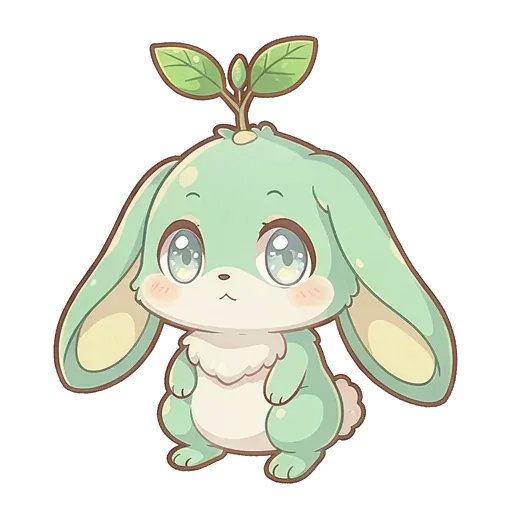
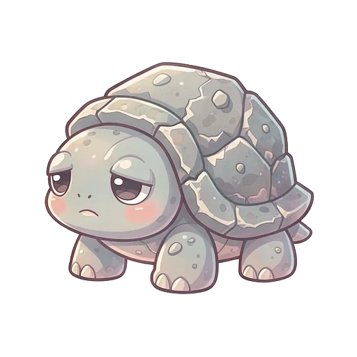
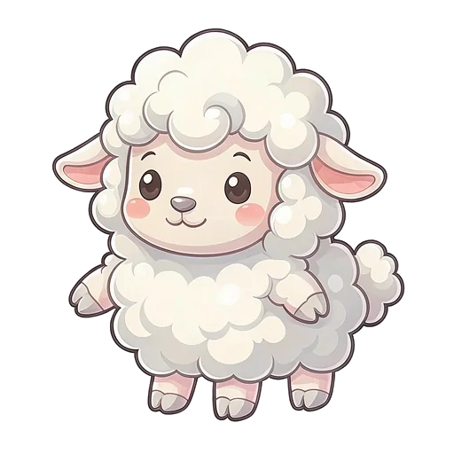
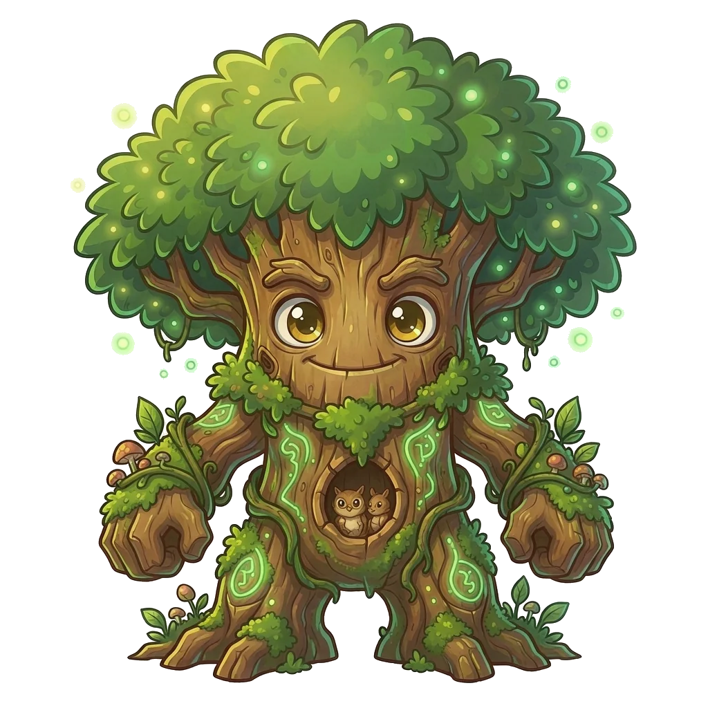

芽芽兔 Sprout Bunny
木敌方·小兵普通
分裂：被击杀原地留下芽苗，短暂后萌出新的小兔。
林间蹦跳的嫩芽精灵，看似无害，却总在不经意间铺满整片草地。
对策：优先清理，避免被分裂出的小兔逐步淹没阵地。
灼烧：接触玩家会附加持续灼烧伤害。
尾尖跳着火苗的顽皮狐狸，跑得飞快，所过之处留下焦痕。
对策：高机动但脆皮，用范围伤害或减速在路径上拦截。
吐水弹：周期发射可追踪的水弹。
鼓着腮帮的水塘居民，没事就爱朝经过的人吐水泡。
对策：保持走位规避弹道，近身可快速击杀。

石甲龟 Stone Turtle
土敌方·坦克稀有
减伤护盾：受到伤害 −40%。
背负厚甲的沉稳老龟，慢吞吞却几乎打不动。
对策：高血厚甲，用水/光系持续输出慢慢磨穿护盾。
俯冲：高空蓄力后向玩家俯冲撞击。
栖于林冠的星光之鸟，振翅时洒落细碎星尘。
对策：极快但轨迹可预判，俯冲落点提前闪避再反击。

棉花羊 Cotton Sheep
光/治愈友方·宠物史诗
掉落羊毛：被击败有概率掉落可回血的羊毛。
软糯的云朵绵羊，蹭一蹭就能让人安心下来。
对策：优先捕捉或保护，持续为队伍提供续航。

森林古木 Forest Ancient
木/土敌方·BOSS传说
召唤藤蔓 + 范围践踏：周期召唤小藤蔓掩护，并释放震屏践踏。
沉睡千年的林心古木，被惊扰后舒展枝桠，怒意撼动整片森林。
对策：优先清理召唤出的藤蔓，踩准践踏间隙集火输出。
星辉治疗 + 净化：持续为友军回复生命，并清除负面状态。
引动星辉的灵鹿，所踏之处伤痕愈合，阴霾退散。
对策（阵容）：队伍核心续航位，配合前排承伤可稳住战线。